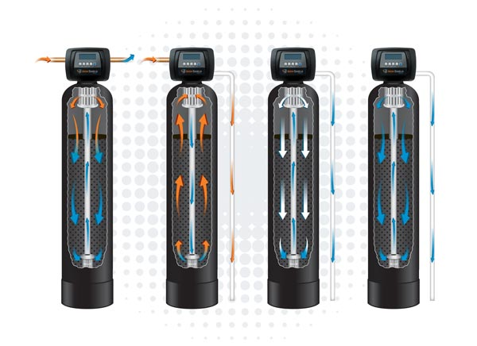

Professional-grade water filtration, softening, and reverse osmosis systems, expertly sized and installed by USA Water Company technicians in Phoenix and Miami.
Remove iron, rust, sulfur odor, and sediment from every tap, with no salt and no chemicals.
View system → Drinking WaterFive-stage reverse osmosis with remineralization for cleaner, better-tasting water at the kitchen tap.
View system →A whole-house system built for well water that removes iron, rust, sulfur odor, and sediment using natural air filtration, with no salt and no chemicals.


A five-stage reverse osmosis system that purifies your water, then adds healthy minerals back for cleaner, better-tasting water at the tap.


An under-sink reverse osmosis system that reduces a wide range of contaminants for cleaner, bottled-quality drinking water straight from your kitchen faucet. Includes a dedicated faucet, storage tank, and installation kit.
Full specifications, certifications, and warranty terms are reviewed with you during your free in-home consultation.
Request a Free Consultation →A tankless reverse osmosis drinking water system with a built-in digital display and dual-mode smart faucet. Delivers high-purity water on demand while saving space under your sink.
Full specifications, certifications, and warranty terms are reviewed with you during your free in-home consultation.
Request a Free Consultation →A combination water softener and carbon filtration system for municipal water supplies. Removes hardness and chlorine to protect your pipes and appliances while improving taste throughout the whole home.
Full specifications, certifications, and warranty terms are reviewed with you during your free in-home consultation.
Request a Free Consultation →All product specifications, certifications, warranty terms, and performance data are provided by the equipment manufacturer. A free in-home water test is recommended to determine the right system for your home.
Book a free in-home water test and our specialists will walk you through your results and options for your water, home size, and budget, with no pressure and no obligation.